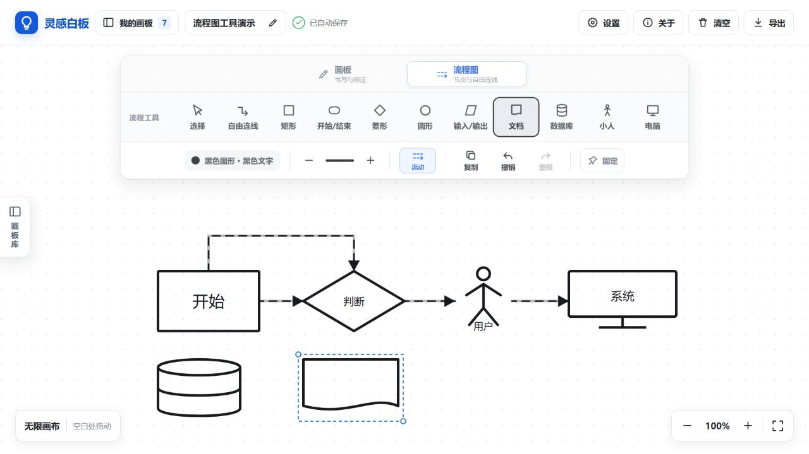

一款为课堂教学、流程讲解与灵感记录打造的本地无限白板。

无限画布 · 本地离线 · 流程图工具 · 轻松导出
自由缩放与拖动，把复杂内容完整展开。
多块画板自动保存，课堂内容随时继续。
节点、四边连线与流动效果，快速讲清逻辑。
干净导出 PNG，并在下载管理中直接预览。
工具互不混用，滚轮可在当前工具与拖动画布之间快速往返。
灵感白板使用 MIT 许可证开源，欢迎查看源码、提交建议并参与改进。
你的支持会用于持续维护、功能优化与更多免费教学工具的开发。感谢每一份鼓励，也感谢你愿意把灵感白板分享给更多老师。